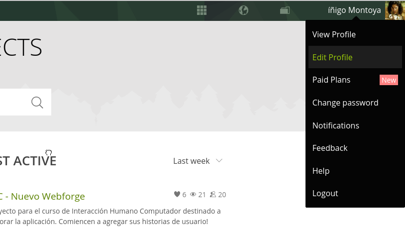

- Who Is Taiga For?
- Why Should I Use Taiga.io And Not (Insert Name Of One Of The Many Worthy Alternatives)?
- How do I get in In touch with you, or keep up with the Latest News?
- How can I contribute to Taiga?
- Making Donations to Taiga
- How do I install Taiga On My Own Servers At Home Or At Work?
- Why is there no Time Tracking?
- What's the difference between public and private projects?
- Important Information about the Taiga License
- Can I use Taiga in my language?
Can I use Taiga in my language?
Taiga is currently translated into these languages:
- Catalan
- Chinese Traditional
- Dutch
- English
- Finnish
- French
- German
- Spanish
Change prefered language:
You can choose your prefered language in the User Profile Settings Panel:
- Log into Taiga.
- Go to any of you projects.
- Click the "User Preferences" icon (your avatar) at the left botton. 
- Select "User profile".
- Choose your "Language" and press "Save".

Help us to translate in your language:
We are ready now to accept your help translating Taiga. It's easy (and fun!):
- Access to our team of translators with this link: Help Taiga to trasnlate content
- Set up an account in Transifex
- Start contributing.
Join us to make sure your language is covered!